Chapter 3
Three Dimensional Views
3.1 Introduction
Three dimensional drawing (pictorial drawing) show several faces of an object simultaneously, approximately as they appear to the observer. Pictorial drawings show only the appearances of parts but does not completely describe complex or detailed forms. Pictorial drawings enable a person without technical training to visualize the design represented. It also enables the designer to visualize the successive stages of the design and to develop it in a satisfactory manner. There are three principal types of pictorial drawings:
- Isometric
- Oblique
- Perspective
3.2 Isometric Projection
Isometric means equal measure. An isometric projection is produced by placing the object so that its principle edges or axis make equal angles with the plane of projection. In this position, the edges of a cube would be projected equally and would make equal angles with each other $\left(120^{\circ}\right)$. Figure 3.2 shows the projected view. In this case, the edges of the cube are inclined to the plane
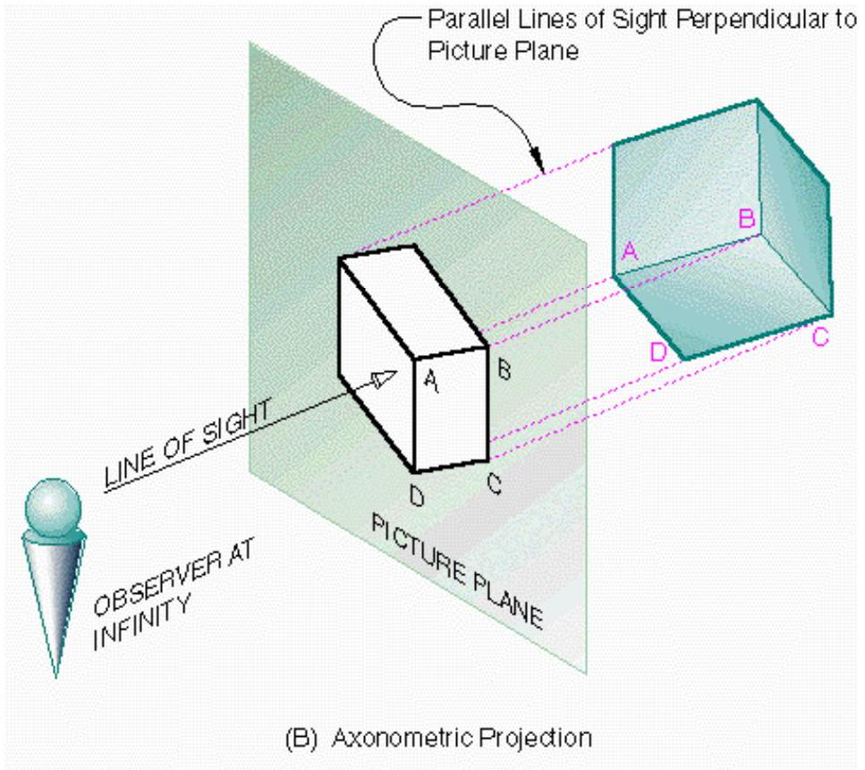Figure 3.1: isometric projection
of projection and are therefore foreshortened. Therefore to obtain the full size view, an isometric
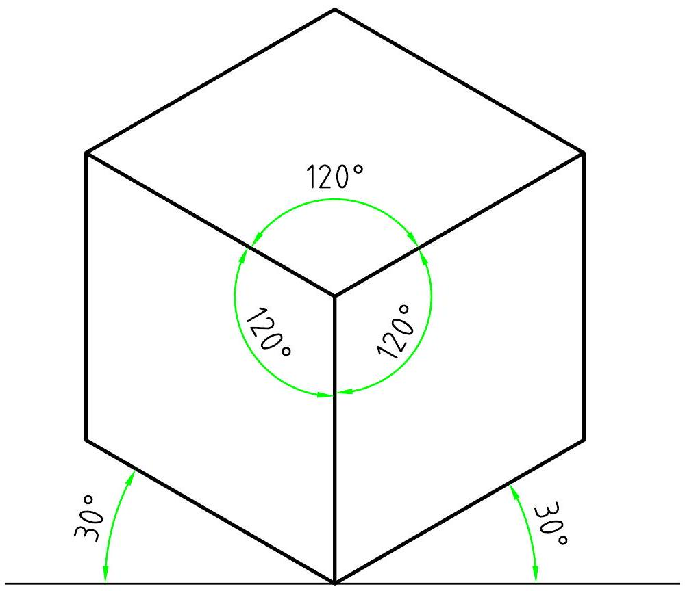Figure 3.2: isometric projection
scale is used. When the view is prepared with an ordinary scale, it is an isometric drawing, when prepared with an isometric scale, it is an isometric projection. Isometric drawings are much easier to execute and are satisfactory for all practical applications.
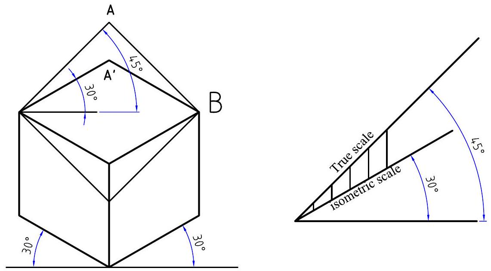Figure 3.3: Isometric Scale
3.2.1 Objects composed of entirely isometric lines
These objects are easily drawn as all dimensions in the orthographic views may be drawn directly onto the isometric view. Hidden detail is omitted unless it is essential to show the shape of the object. Figure 3.4 shows the procedures in drawing an isometric view.
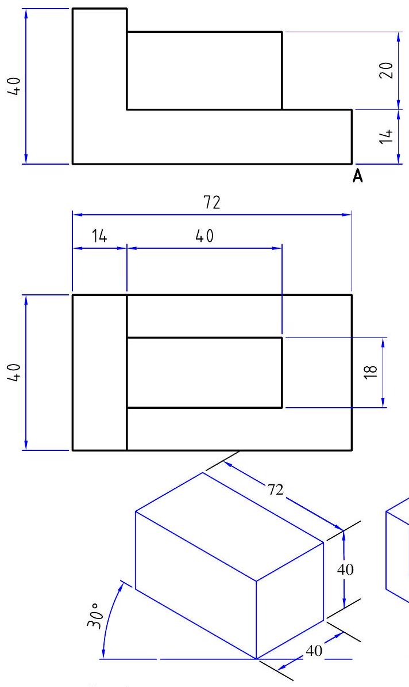step 1
Draw a box (principal box) into which the object will just fit.
step 3
Add other details within the object.
Make an isometric drawing ofthe block shown with corner A as the lowest point.
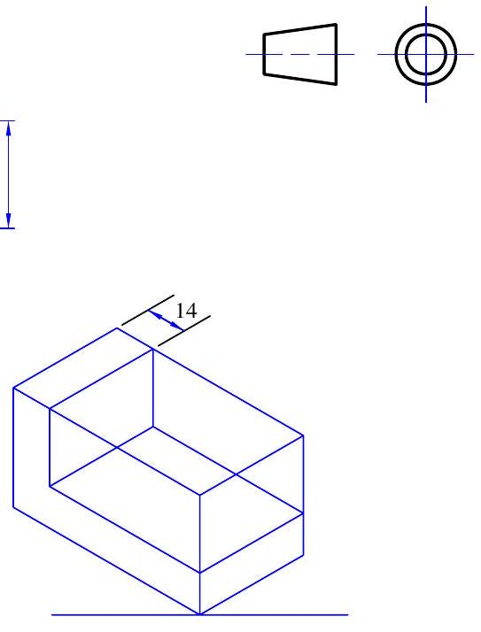step 2
constuct the basic shape of the object within the principal box.
step 4
Construct the visible lines of the view.
Figure 3.4: Isometric drawing
3.2.2 Objects with non-isometric lines
Lines on an object which are located by angles are non-isometric lines. Angles cannot be laid off directly on an isometric drawing as they do not appear in their true sizes. Lines positioned by angles are drawn by fixing their ends using isometric lines as shown in figure 3.5 .
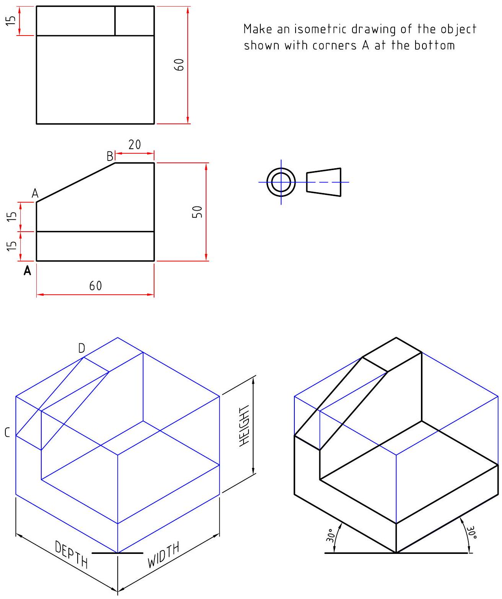- Draw the principal box and construct basic shape.
- Transfer dimensions $x$ and $y$ to the isometric drawing and draw isometric lines.
- Connect the relevant points with lines.
- Draw the visible lines.
Figure 3.5: Isometric drawing
3.2.3 Circles in isometric projection
Any circle on an isometric drawing will appear as an ellipse which may be drawn in several ways:
1. circle construction by circumscribing square method
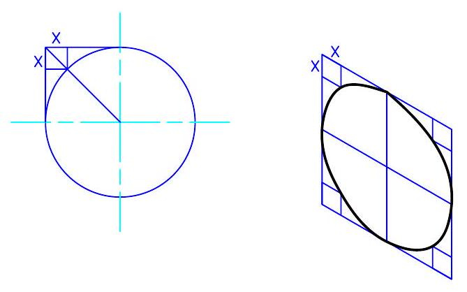Figure 3.6: Isometric drawing
2. approximate circle construction;
the ellipse occurs so frequently on isometric drawings that an approximate method using circular arcs is often used to draw it. This is done by drawing an isometric square with sides equal to the diameter of the circle. The long diagonal is drawn and either B or D is joined to the midpoints of opposite sides. Where these lines cross the long diagonal are two arc centers. The other centers are corners B and D on the short diagonal. When drawing a cylinder, the centers of the other end are obtained by drawing isometric lines thru' centers $\mathrm{B}, \mathrm{D}, \mathrm{X}$ and Y and marking off the length L of the cylinder to obtain centers $\mathrm{B}^{\prime}, \mathrm{D}^{\prime}, \mathrm{X}^{\prime}$ and $\mathrm{Y}^{\prime}$. The same method may be used to draw holes if both ends are visible.
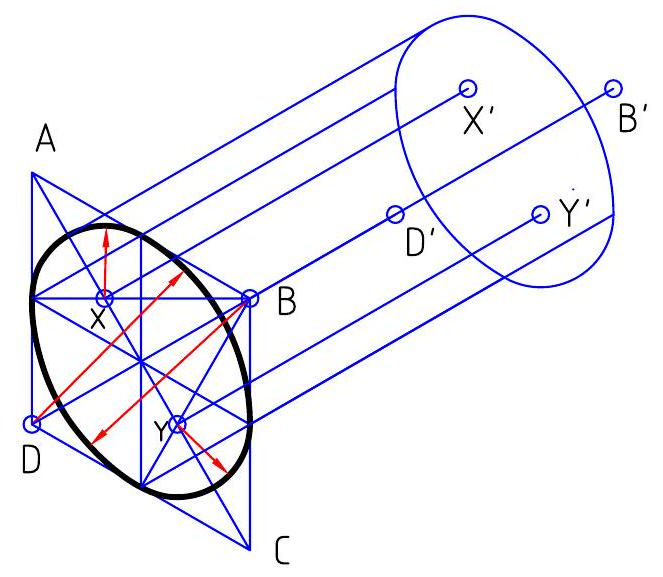Figure 3.7: Isometric circle drawing by circular arc approximation
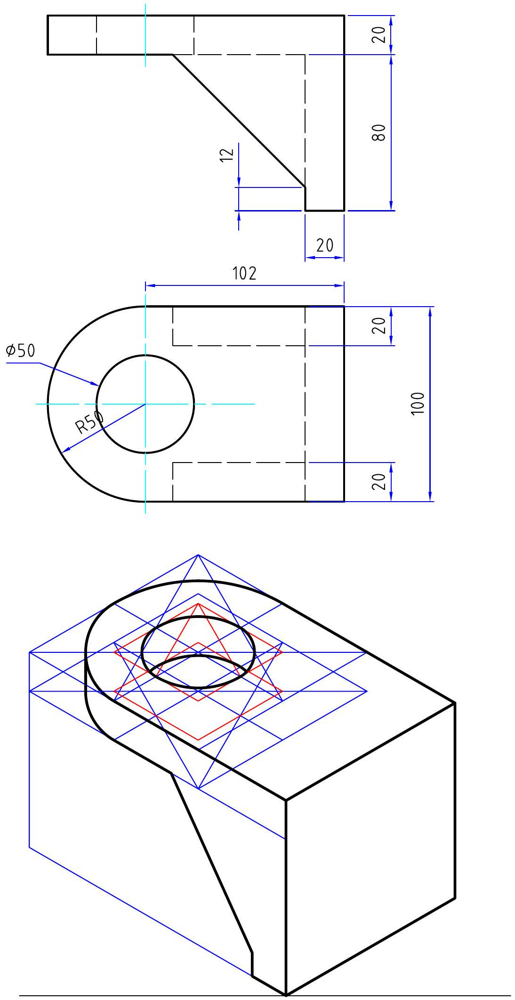Figure 3.8: Isometric drawing
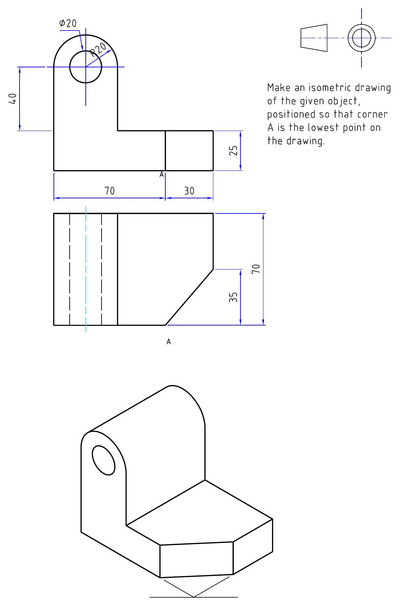Figure 3.9: Isometric drawing
3.3 Oblique Projection
Oblique projection is a method of producing a pictorial view of an object. In oblique, the projectors are parallel to each other but oblique to the projection plane as opposed to isometric projection where the projectors are parallel and normal to the projection plane. The principal face is kept parallel to the projection plane.
In oblique drawing, surfaces that are parallel to the principal face appear as true shapes while lines which are perpendicular to the principal surfaces are drawn at a receding angle, $30^{\circ}, 45^{\circ}$ or $60^{\circ}$. The receding angle to be used depends on the shape of the object and location of its significant
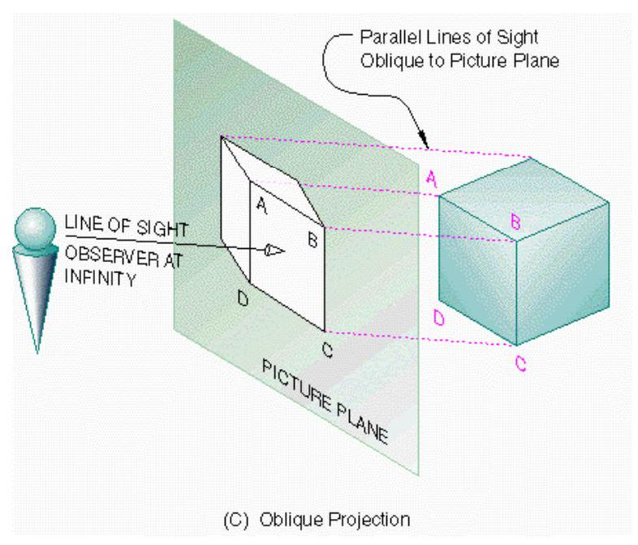Figure 3.10: oblique projection
features. A larger angle is used to show features on the top plane of an object while a smaller angle is used to show features on the side plane of an object.

Figure 3.11: Angle of receding line
When the receding lines are drawn with their true lengths, the object appears distorted. The degree of distortion may be decreased by decreasing the the length of receding lines. Scales of $\frac{1}{2}$ and $\frac{3}{4}$ full size are commonly used. When the receding lines are true lengths (drawn to full scale), the oblique drawing is called a cavalier projection.
When the receding lines are drawn to $\frac{1}{2}$, the drawing is commonly known as a cabinet projection. The term is attributed to the early use of this type of oblique drawing in the furniture industries.
The face of an object containing circles and arcs should be placed parallel to the plane of projection if possible. Circular features which are not parallel to the front plane appear elliptical. The longest dimension of the object should be placed parallel to the plane of projection if possible.
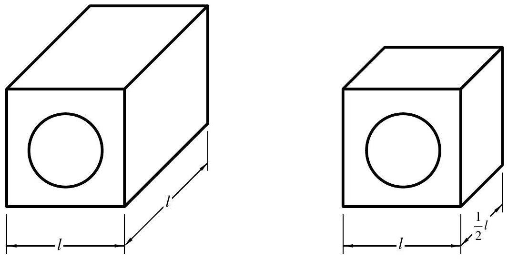Figure 3.12: Cavalier Versus Cabinet projection
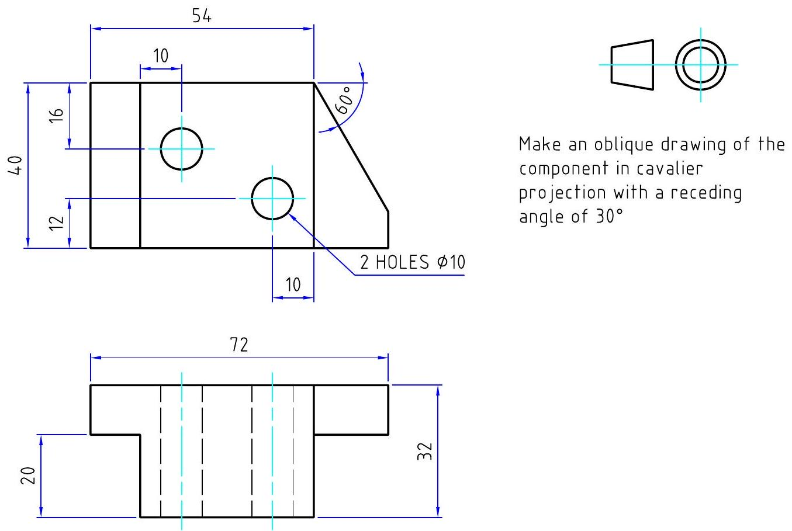Figure 3.13: Oblique example
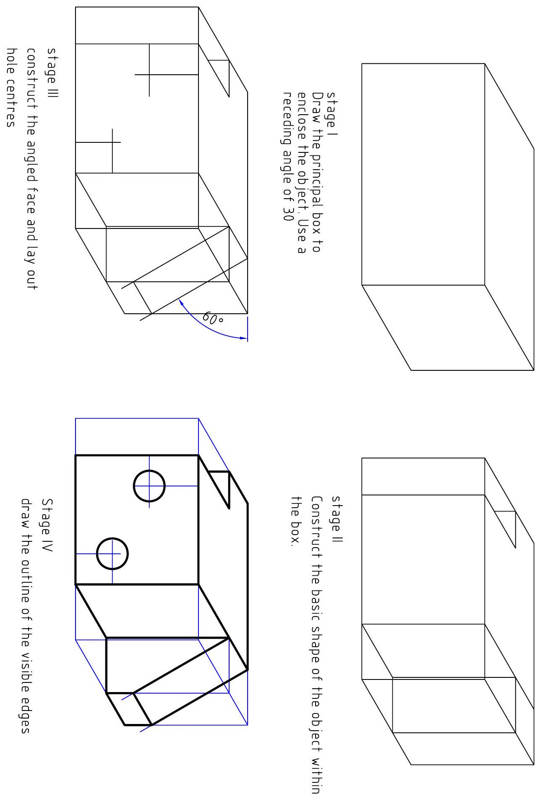Figure 3.14: Procedures for oblique drawing
3.4 Perspective Projection
Perspective projection (central projection) is a form of pictorial representation of objects that closely approximates the view obtained by the human eye more than the other types of pictorial drawings. Perspective is of major importance to the architect, industrial engineer and civil engineer.
Perspective drawing involves four main elements
- the observers eye
- the object being viewed
- the plane of projection
- the projectors from the observers eye to all points on the object
The plane of projection is placed between the observer and the object and collective piercing points in the plane of projection of all the projectors produces the perspective.
Perspective drawings are normally classified according to the number of vanishing points required which in turn depends upon the position of the object with respect to the projection plane or picture plane.
- If the object is placed with one face parallel to the projection plane, only one vanishing point is required and the result is one point perspective or parallel perspective
- If the object is situated at an angle to the projection plane, but with the vertical edges parallel to the projection plane, two vanishing points are required and the result is a two point perspective or angular perspective. This is the most common type of perspective drawing.
- If the object is situated so that no system of parallel edges is parallel to the projection plane, three vanishing points are necessary and the result is a three point perspective
Figure 3.15: Procedures for one-point perspective drawing
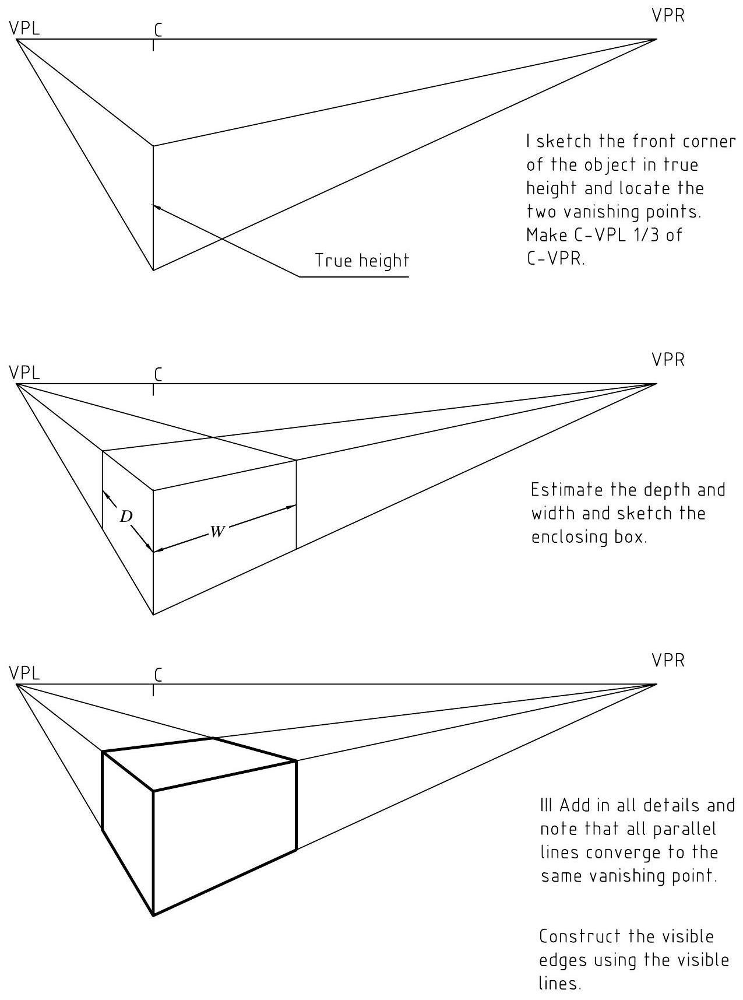Figure 3.16: Procedures for two-point perspective drawing